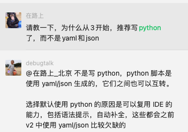
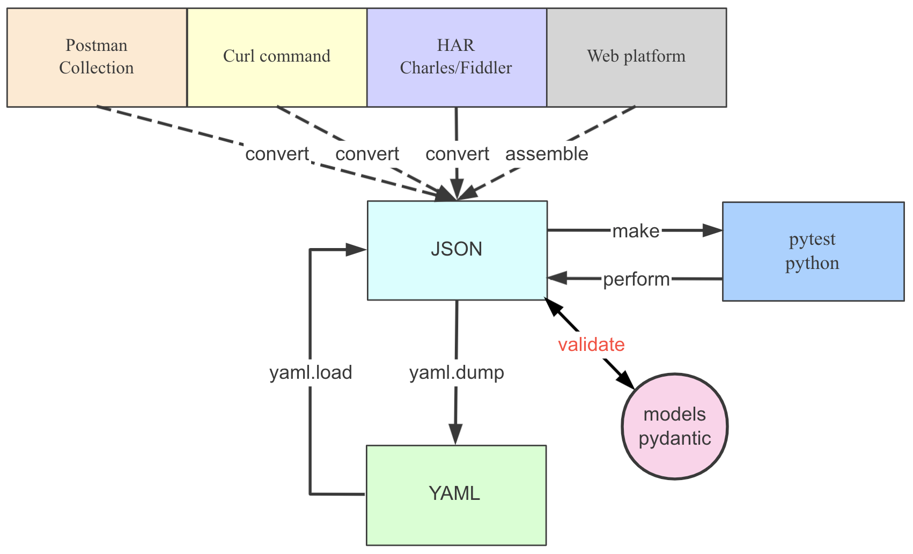
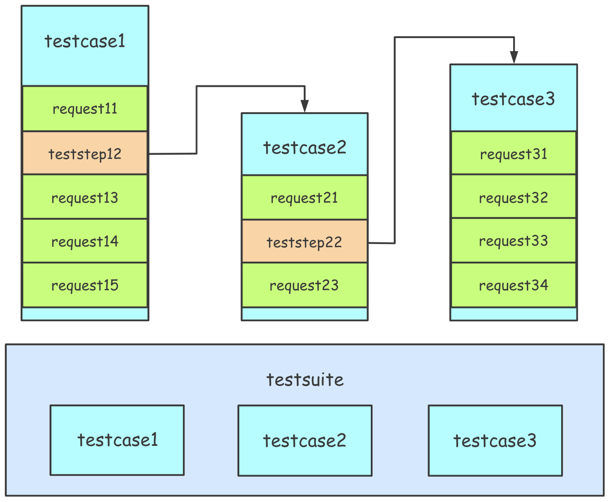

测试用例结构
YAML & Python & JSON
HttpRunner v3.x 支持3种用例格式：pytest、YAML和JSON。
pytest、YAML和JSON格式的测试用例完全等价，包含的信息内容也完全相同。
- 对于有python基础的，建议以
pytest格式而不是以前的YAML / JSON格式编写和维护测试用例。 - 对于新手来说，推荐使用 JSON 格式，虽然描述形式上稍显累赘，但是不容易出错（大多编辑器都具有 JSON 格式的检测功能）；同时，HttpRunner 也内置了 JSON 格式正确性检测和样式美化功能，详情可查看《Validate & Prettify》 。
- 对于熟悉 YAML 格式的人来说，编写维护 YAML 格式的测试用例会更简洁，但前提是要保证 YAML 格式没有语法错误。
关于为什么从HttpRunner v3.x开始，作者比较建议python脚本编写用例。主要是编写Python可以复用IDE的能力，包括语法提示、自动补全，这些都会是Yaml/Json比较欠缺的。

脚本格式转换关系如下图所示：

对于三种格式的展示差异，可以对比查看 demo_testcase.json / demo_testcase.yml / demo_testcase_test.py 获取初步的印象。
后面为了更清晰的描述，统一采用 YAML 格式作为示例。
测试用例结构
在httprunner中，测试用例组织主要基于三个概念：
- 测试用例集(testsuite): 对应一个YAML/JSON/Python文件，包含单个或多个测试用例文件。
- 测试用例(testcase): 对应一个YAML/JSON/Python文件，包含单个或多个测试步骤。
- 测试步骤(teststep): 对应YAML/JSON/Python中 teststeps下的一个节点，描述单次接口测试的全部内容，包括发起接口请求、解析响应结果、检验结果等。
对于单个YAML文件来说，数据存储结构为list of dict的形式，其中可能包含一个全局配置项(config)和若干个测试步骤。
具体地： * config: 作为整个测试用例的全局配置项 * 测试步骤：对应单个测试步骤(teststep)，测试用例存在顺序关系，运行时将从前往后依次运行各个测试步骤。
testcase对应的YAML格式如下所示：
config:
...
teststeps:
- # step 1
...
- # step 2
...
变量空间(context)作用域
在测试用例内部，HttpRunner划分了两层空间作用域(context).
- config: 作为整个测试用例的全局配置项，作用域为整个测试用例，包含base_url, verify, variables, export。
- teststeps: 测试步骤的列表，每个步骤都对应一个API请求或另一个用例的引用，另外variables/extract/validate/hooks支持创建及其复杂的测试用例。
- 测试步骤的变量空间会继承或覆盖config中定义的内容
- 若某变量在 config 中定义了，在某 test 中没有定义，则该 test 会继承该变量
- 若某变量在 config 和某 test 中都定义了，则该 test 中使用自己定义的变量值
- 各个测试步骤的变量空间相互独立，互不影响；
- 如需在多个测试步骤中传递参数值，则需要使用 extract 关键字，并且只能从前往后传递
config
每个测试用例都必须有config部分，可以配置用例。
config:
name: xxx
variables: # 配置变量(config variables)
varA: "configA"
varB: "configB"
varC: "configC"
parameters: # 参数变量(parameter variables)
varA: ["paramA1"]
varB: ["paramB1"]
base_url: "https://postman-echo.com"
verify: False
export: ["foo3"]
teststeps:
-
name: step 1
...
-
name: step 2
...
name(必须)
测试用例的名称，将在log和报告中展示。
base_url(可选)
测试用例中的通用Host，例如https://postman-echo.com。如果base_url被指定，测试步骤中的url只能写相对路径。当你要在不同环境下测试时，这个配置非常有用。
variables(可选的)
定义的全局变量，作用域为整个用例。每个测试步骤都可以引用config variables。也就是说，step variables 优先级高于 config variables.
parameters(可选的)
全局参数，用于实现数据化驱动，作用域为整个用例。
verify(可选的)
指定是否验证服务器的TLS证书。如果我们想记录测试用例执行的HTTP流量，这将特别有用，因为如果没有设置verify或将其设置为True，则会发生SSLError。
export(可选的)
指定输出的测试用例变量。将每个测试用例看作一个黑盒，config variables是输入变量，config export是输出变量。当一个测试用例在另一个测试用例的步骤中被引用时，config export将被提取并在随后的测试步骤中使用。
teststeps
每个测试用例都有1个或多个测试步骤（List[step]），每个测试步骤对应一个API请求或其他用例的引用。

注意：为了简单，在HttpRunner v2.x中的API概念已经被取消了。你可以将API定义为只有一个请求步骤的测试用例。
teststeps:
-
name: get with params
variables:
foo1: bar11
foo2: bar21
sum_v: "${sum_two(1, 2)}"
request:
method: GET
url: /get
params:
foo1: $foo1
foo2: $foo2
sum_v: $sum_v
headers:
User-Agent: HttpRunner/${get_httprunner_version()}
extract:
foo3: "body.args.foo2"
validate:
- eq: ["status_code", 200]
- eq: ["body.args.foo1", "bar11"]
- eq: ["body.args.sum_v", "3"]
- eq: ["body.args.foo2", "bar21"]
-
name: post form data
variables:
foo2: bar23
request:
method: POST
url: /post
headers:
User-Agent: HttpRunner/${get_httprunner_version()}
Content-Type: "application/x-www-form-urlencoded"
data: "foo1=$foo1&foo2=$foo2&foo3=$foo3"
validate:
- equal: ["status_code", 200, "失败原因"]
- equal: ["body.form.foo1", "$expect_foo1"]
- equal: ["body.form.foo2", "bar23"]
- equal: ["body.form.foo3", "bar21"]
name(必须)
name用来定义测试步骤 name，将出现在log和测试报告中。
variables(可选的)
测试步骤中定义的变量，作用域为当前测试步骤。
如果想在多个测试步骤中共享变量，需要在config variables中定义。
测试步骤中的变量，会覆盖config variables中的同名变量。
request(必须)
method(必须)
设置http方法，支持RestFul中的所有http方法（GET/POST/PUT/PATCH/DELETE/） ，相当于requests.request 中的method。
url(必须)
设置Url,如果base_url在config中设置了，url只能是相对路径部分。相当于requests.request 中的url。
params(可选)
设置Url的query，相当于requests.request 中的params。
headers(可选)
设置请求的headers，相当于requests.request 中的headers。
cookies(可选)
设置Http请求的cookies，相当于requests.request 中的cookies。
data(可选)
设置http请求的Body，相当于requests.request 中的data。
json(可选)
设置http请求json格式的body，相当于requests.request 中的json。
extract(可选)
从当前 HTTP 请求的响应结果中提取参数，并保存到参数变量中（例如token），后续测试用例可通过$token的形式进行引用。
原理：利用jmespath 提取Json response body的内容。
validate(可选)
测试用例中定义的结果校验项，作用域为当前测试用例，用于实现对当前测试用例运行结果的校验。
原理：用jmespath 提取Json response的内容，并进行断言校验。
格式：
- 运算符: [jmespath表达式, expected_value, message]
- 运算符包括:
- equal: 等于
- contained_by: 实际结果是否被包含在预期结果中
- contains: 预期结果是否被包含在实际结果中
- endswith: 以...结尾
- greater_or_equals: 大于等于
- greater_than: 大于
- length_equal: 长度等于
- length_greater_or_equals: 长度大于等于
- length_greater_than: 长度大于
- length_less_or_equals: 长度小于等于
- length_less_than: 长度小于
- less_or_equals: 小于等于
- less_than: 小于
- not_equal: 不等于
- regex_match: 字符串是否符合正则表达式匹配规则
- startswith: 以...开头
- string_equals: 字符串相等
- type_match: 类型是否匹配
- jmespath: jmespath表达式，详见JMESPath Tutorial
- expected_value: 指定期望值或变量，也可以调用方法
- message(optional): 用于描述断言失败原因
hooks(可选)
- setup_hooks函数放置于debugtalk.py中，并且必须包含三个参数：
- method: 请求方法，比如：GET,POST,PUT
- url: 请求URL
-
kwargs: request的参数字典
-
teardown_hooks函数放置于debugtalk.py中，并且必须包含一个参数:
- resp_obj: requests.Response实例
关于 setup_hooks 和 teardown_hooks 的更多内容，请参考《hook 机制》 。
测试步骤中引用测试用例
示例：
teststeps:
-
name: request with functions
variables:
foo1: testcase_ref_bar1
expect_foo1: testcase_ref_bar1
testcase: testcases/demo_testcase_request.yml
export:
- foo3
variables
跟request中的variables一样
testcase
指定引用的测试用例
export
从引用的测试用例中提取的变量，该变量在后面的test steps中可以引用